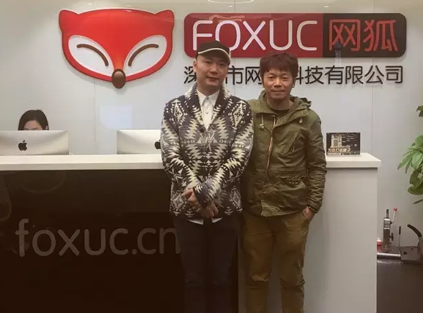
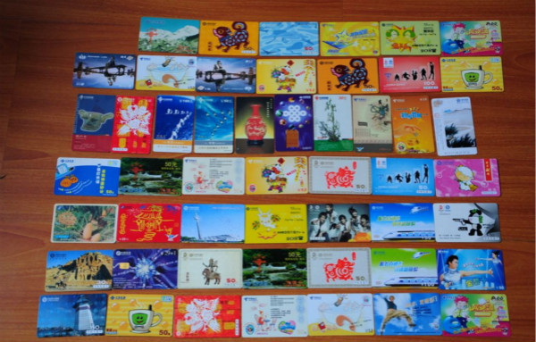
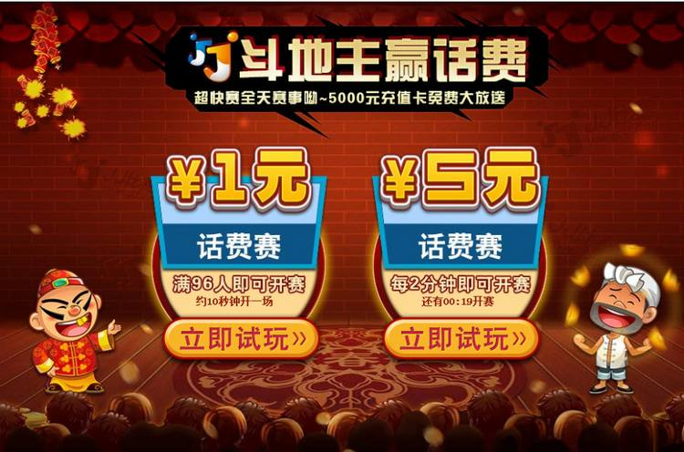
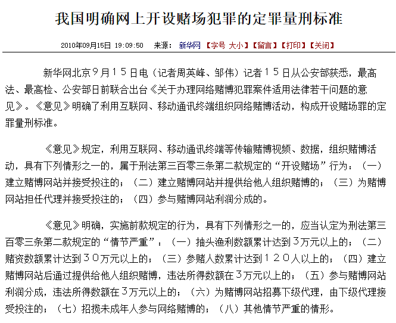
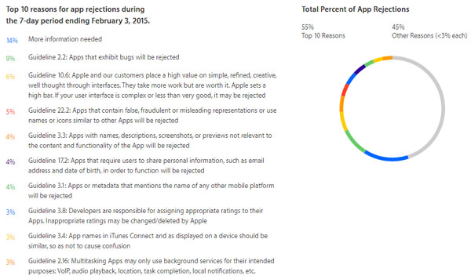

一、纹桃的起点——“50万干票大的，只有棋牌”
“纹桃注册在2005年1月，但真正开始是在2004年，因为要开发票，所以注册了纹桃，当时有人想要我们这一套东西。”胡穗华笑着回忆，“当年我和我的合伙人靠省下来的钱开了纹桃，原本打算开两年就关门回去上班的。”
纹桃，一家超过十二载历史的老牌棋牌游戏公司，并不常抛头露面于媒体与业界的视觉当中，却深烙在许多棋牌游戏的资深从业者的口碑相传里，静谧地座落于在深圳海岸城的一座写字楼当中。
“纹桃最大的优势应该是信息——全国各地的客户每天有一百多个来电咨询，一个月下来有四千多个来自全国各地的运营者来找我们提需要什么产品，告诉我们目前的市场动态，这对我们来说是优势，我们都记录下来：因此我们较为清晰目前市场的变化，未来该怎么走，就算是一些运营公司的市场部，信息都没有我们那么准。”
胡穗华淡淡一笑地指出：“有的人十几万就可以做棋牌游戏，是因为通过买代码，我们这些公司把之前90%的工作都做完了，如果从零开始一套下来需要四到五百万，一套系统到平台，大的游戏要过千万成本。”
胡穗华和另外一位纹桃的创始人在2004年中开始就在做产品，“当时运营棋牌游戏的公司只有三四家，一家是联众，一家黄金岛，另外一家是中国游戏中心，当时腾讯都还没出来，给到我们参考的产品没有多少，从无到有是按照自己的想法去做，当时最重要的方向就是要稳定、支撑用户，这也是纹桃平台的基础点。”

游戏陀螺专访胡穗华（左）
“棋牌游戏公司的三年存活率，2005年十家留三家，到了2015年只能百家留两家，竞争虽然更惨烈，但还是有很多人投身，因为有一个关键点：棋牌游戏的投资非常低，50万就可以，产品、推广、注册、办公室等全部搞定——50万能干吗，去创业。可是50万可能连大排档都搞不起，50万能干票大的，还合法，棋牌是为数不多的选择。”
“其实买产品还不算高昂，更高昂的成本是在于你的运营、推广，很多人收了钱不干活，把别人公司的代码买回来转手贩卖，没有维护能力、没有二次开发能力，别人拿了十几二十万买你的东西，这在当时可以买一套房子了……纹桃做了这么多年有品牌有口碑，并不是我们做得要有多好，而是我们在业界做得比较有良心。”
二、纹桃十三载，中国棋牌数度沉浮
1、PC未普及的开荒
胡穗华回忆，纹桃刚成立时当时的棋牌游戏用户基本只有两类人群，一是单位上班族，二是一二级城市的家庭用户，“其中单位玩的人最多，也靠这部分人带起来，因为单位电脑多，当时家用电脑还没普及，城乡更是如此。当时的棋牌受众年龄段固化在17-47岁，其他年龄段的人接触不到，要么没有电脑，要么不会使用电脑、不会去网吧，怎么推广也没用。”
“当时推广都以全国性推广为主，抢百度关键字很便宜，一毛多就可以，现在则要几十块，当时没有什么导量，只有相互交换链接，都是很普遍的推广方式，地推很难做，当时是以做实卡充值为主，不是虚拟卡。”他指出，当时的棋牌挺分化的，经营商已经存在，但当时都是玩家自己运营，很零散，像网游的虚拟道具模式，还有第三平台买卖，而当时充值最高的是电话充值。
他回忆：“我当时一次开车去到一个客户的家门口卖实卡，他告诉我他是个老板，在上海已经有七八套房子，是专门花几千块买新的电脑来玩我们的棋牌游戏，因为当时也只有这么一款游戏——但他不会装，我于是帮他下载、安装、充值再回家，然后我在本子上记下日期与安装信息，而现在这本子我还一直保留着。”

那些年卖过的实体卡
“这还不是个别，很多客户都是这样，电脑端棋牌游戏就是这样培养起来的，其蓬勃发展有他们的功劳与份额，当时阻碍棋牌发展的是PC端普及率不够高，老年人不会用。”
2、地方棋牌爆发：转向地方扎点运营
胡穗华回忆，在当时棋牌在开发者端还处于无人问津的阶段，“你问棋牌是什么？不懂……在2005年初能开发棋牌游戏的公司当时我知道的也就两三家。”他感慨，纹桃在2005年之前一年只有两个电话咨询业务，但到了2005年突然上升到了有几十个电话来咨询游戏平台，而到了2005年末整个业界也发展到了有十几家专门针对棋牌的游戏公司。
“这一波棋牌的发展很大的原因是地方棋牌游戏的爆发。”胡穗华指出，“是哪家把地方性棋牌做起来？我记得当时是远航科技，公司也在深圳，它开始做全国怎么做都做不起来，就做陕西地区的地方性棋牌，一下子就火起来了，只用了五个月，做到了同时在线三万多人，后来两亿被全资收购，这在当时是很夸张的，而它直到今天都还在赚钱。”
“很多人开始去找当地的游戏、去开发游戏、去建立平台……”胡穗华回忆，当时纹桃甚至连网站都还没有，但经历了这个从全国运营偏向地方运营扎点的转折点，纹桃也从2005年开始成长、迎来了爆发，业务量不断上升。
3、“网络上的拉斯维加斯”
到了2006年，棋牌游戏来到了一个百花齐放的阶段，“知道的公司已经有几十家，小团队很多，那时候最大的开发团队，我们已经是其中之一了，但当时也就二十来人。”胡穗华不禁莞尔。
“纹桃从两人到二十多人，扩张很快，因为需求量很大，各种地方性游戏客户都需要我们来开发，给钱你帮我开发这款游戏，你还可以自己去当地卖，进行二次、三次、四次贩卖，钱还是你赚，客户都愿意，因为棋牌游戏在当时市场稀缺，几乎是没有。当时看起来像是没有成本就可以干的事情……而在这一波发展只要做得好的棋牌游戏公司，基本都留到了现在。”
“2006年的棋牌百花齐放，最关键是中国对棋牌赌博的管控是在2008年才开始，也就是说，相对来说，当时想干吗都行，遍地开花——当时市场上一些游戏甚至演变出转帐功能等，方便经营商去管控自己的用户，甚至还有官私勾结等等。”
胡穗华回忆：“到了2007年就更大胆了，什么赌博游戏都出来了，那一年是疯狂的，人在国内、公司在国内的都敢这么干。这一波的发展是非常夸张的，其实都是一样的游戏，最重要在于经营商拉用户进来，五百人的平台，一个月收入可达八千万……当时有个老板是别的平台的用户，一边从宝安机场过来我们公司的路上想要找我谈生意，一边玩了几盘百家乐，输了三十多万人民币现金。”
游戏陀螺不禁感叹：这如同“网络上的拉斯维加斯”。
4、第一次的大规模网络管控
“2006年中国发生了一个入室抢劫杀人的案子，主犯交待为什么杀人，因为没钱欠钱，而为什么没钱欠钱？是因为在某某平台玩了款游戏输了十几万，然后又跟人借钱还不了，刑事案件出来之后，才知道这是属于赌博游戏……这只是一个案件，但意义影响却是深远的：2008年6月份红头文件下来，棋牌游戏的监管开始了。”
“2008年10月，当时中国网监成立没多久，列出来名单36家棋牌公司被抓被封，整个市场的环境风向发生了极大的转向。”胡穗华回忆，在一段时间内，全国没人敢再干棋牌游戏，“我们当时一个月将近一百万收入，这在2008年来说利润是很可观的，而且合法，不担风险，别人还给钱你去开发。但一瞬间，时代变了：整个2008年下半年到2009年中，我们都是真正熬过来的。”
“我们当时想：政策变化，需要改变思路，干什么好呢？——干比赛。”
5、改变思路，熬过去、活过来——“干比赛”
“2008年6月份的红头文件整顿了2005年到2008年的这一波做棋牌游戏的，留下的人转变成做比赛——当时2008、2009年我们有两个方向，一个是视频，一个是比赛，但我们更偏重比赛，这个判断是准确的，当时以及后来的其他家不少视频方向的棋牌游戏都涉黄，我知道重点不能放在这里。2009年，我们因为办比赛而又活了。”
“做棋牌游戏赛事的总方向就是：先人数后盈利”，胡穗华指出，吸引受众最直接的就是现实的奖品，模式主要是即时赛，比如九个人一个场子，设置打第一、第二有奖品，一般是虚拟但可兑换成现实奖品——“当时有游戏币与奖券，比赛币是有了一定累积之后可以参加更高级的，奖券则是累积一定之后可以兑换实物奖品，当是很多是大众游戏为主，像斗地主、德州扑克等，用户玩完会存起来下次去换实物，不用宣传，用户瞬间就起来了。”
“盈利模式就是有了这批人之后，他们会追求更高额的奖金，而游戏的进入门槛也更高，需要消耗更高额的游戏币你才能进去，而且一开场是一百人打，一下子可以收几千块回来，奖金设置成一千块也有很大利润空间，而一千块的奖金，这在当时很有吸引力——这种模式之下才是真正的盈利。”

JJ斗地主的比赛赢话费模式也是同样的模式
胡穗华指出，这种生态实现利润之后还有一个生态，那就是转化成金币用户：“各种场次都有奖金币，而金币用户的真正活跃，大付费用户才真正培养起来。“之前是培养小的，而这些才是真正一个月消费上千块、上万的，这才是真正的盈利模式。但这样的模式相对很慢，比赛盈利一般要等一年。”
6、主营比赛模式往下掉+国家管控，市场再次收窄
通过棋牌比赛，培养了一批职业玩家，“我记得2012年身边就有个还在读书的朋友专门打德州，一年收入120万，自己买了台跑车；有些更夸张，一年收入三四百万，甚至去买豪宅了。”胡穗华提到，棋牌比赛模式一直持续到2010、2011年，出现了一个问题：模式固化，用户进入了厌倦期。
“棋牌比赛模式有个死穴：低等级的人永远是输，打得好的人永远是在食物链的最高层，不用花一分钱又拿到了奖品、荣誉——但在游戏生态中，一般的玩家占大部分，而棋牌的比赛模式也从一开始的大众觉得新鲜而追捧到了大众不能容忍的阶段——我出钱养你，还要被你虐？这是许多人的心理，于是很多用户流失了——当时情况很艰难，小的平台很难坚持下来，大的平台也面临很大运营压力，因为用户在不停往下掉，而那时开始的主营比赛模式到了现在也已经不流行了。”
与此同时，面对面的视频棋牌被封停，这段时期挺多种监管政策出来，比如2011年在浙江乃至全国扫了一大批棋牌公司，控制到用户充值一天现金不能超过两百块，一天输赢总额不能超过五百块，控制得很严格。

关于网上开设赌场犯罪的法律规定
“2008年时把赌博合法经营分开，很多运营商就想各种办法留存下来，本来扩展得很快，但到了2011年又收窄了——最最关键的是出台了虚拟不能换实物的政策，这原本是比赛的生物链所在，这就等于把比赛打死了……其间有些棋牌公司另外注册P2P平台，把实物放上去转换买卖，其实是同一个老板，但后面国家也严打，只能虚拟换虚拟，而现实的、等值货币都不行。”
7、转移动端——“做了一年，一款游戏都没出来”
“于是到了2011年中国棋牌又安静了半年，整个业界又寻找新的出路，那时我们自己也在寻找，当时就决定：干移动端。”
胡穗华提到：“我们第一个移动端就是这么干起来的，技术都是PC的，那时IPHONE4刚出来，当时怎么招人、招什么人都不知道，那时系统很多，黑莓还在，加上安卓、iOS、微软等，当时还没什么跨平台语言，只有很多原生，为了适应机子，买了四五十台测试机，测试时一台一台放上去，那是相当痛苦：做一款游戏，要做4个系统、做几十个分辨率，到了2011年底，一款游戏都做不出来。”
“这还有另外一个原因，当时的AppStore游戏棋牌大厅，所有游戏进去都是要先申请iOS认证，如果有更新再申请一次，快要大半个月，慢则半年，国内游戏拖的时间最长的一款要一年才能在APP上显示。另外，当时国家还没管控APP，内容上相对比较混乱，而安卓则更夸张，当时甚至有很多涉黄的内容。”

AppStore申请出了名的刁钻，上图为网友罗列的审核遭拒十大原因
胡穗华提到，在那个时代，PC和移动端用户的用户，只有一成不到在手机，没有太多运营商关注移动端，一是系统没有统一，二是当时没有很好的开发运营在移动端。
8、从寂寞到疯狂，国家管制加强
“到了2012年，手机端的棋牌很多方面都开始扩张了，支持的语言慢慢有了，技术人员开始多了，但市场接受能力还是不强。”胡穗华指出，手机端的棋牌繁荣是从2013年才正式开始，国家开始看好这一块，而国家对于移动端的管控也随着微信的火热而加强。
“那时有很多捕鱼类及其他休闲游戏出来了，2013年比较疯狂，许多半赌博性质街机游戏搬到手机游戏上面，这一年我们也在不停地做休闲游戏，涉及到3D开发、3D美术、程序——技术都没问题了，自己成长解决。”
到2014年，手机端棋牌份额更比前面2012、2013年的总和加起来都还要高几倍——胡穗华指出，当时几个跨平台语言出来，PC、移动端都可以同时使用，而另外很多系统退役，只要聚焦做iOS与安卓——“最关键是移动用户起来了，2014年9月到2015年1月之前占比达到了三比七，包括网上咨询、百度搜索，都慢慢起来；到了2015年更不用说，盘子到了五五开，移动端扩张了一倍。”
而对应地，2014、2015年，国家开始规定手机游戏的内容范围，什么游戏属于涉黄与赌博，而且放上去的内容无论是在PC端还是手机端，都必须进行产品认证：一款游戏一个认证书，所有平台的游戏都必须要有这个认证书才能放上去。
三、十年总结：真正懂，才能做好
“所以回顾棋牌从2005到2015年的发展：谁能在国家规定法律框架准绳内，找到一套打法，谁就能蓬勃发展——这就是我的十年总结。”胡穗华举重若轻地道出了这句话。
“现在的房卡、约战也是一个道理，在这么严格管控之下它也能出来，需要很懂的人进入这个行业，棋牌才能发展起来——首先，要意识到国家规定是什么，这是基础；第二，对用户需求抓得紧、抓得细，把生态链做好，这是关键。”
而他也提到，闲徕模式就是房卡约战，其推广基础点、生命线在于必须依赖第三方转账，必须要有房主，才能转播，这两个第三方未来有可能会被管控，存在着风险，“闲徕卖了之后，昆仑股价就往下掉，这是很奇葩的。”
“棋牌的发展，以往是市场推动经济，现在不是被动的等，而是用产品去推动市场。我们的理念是以策划推动功能、功能推动市场——棋牌跟网游不一样，网游可以砸钱导量、引导用户进入游戏，棋牌做不到，棋牌没有新手功能，平台只会有很简单的方式让你直接进入游戏，玩你从小到大都懂的规则，这才是它的最大优势。”
“这一点又引发了如何留存的思考：都这样做，你怎么留？砸钱砸向哪？界面吗？功能摆放方式吗？还是动画？我们的一款游戏十年界面没改过，底图就一张没花纹的，用户几千人在上面玩了好几年了，每个月贡献上千上万都有，后来我们发现：用户根本不在意你们的画面有多好看，而只在意你平台的生态方式，这才是最重要的。”
胡穗华阐述：“腾讯对自己做棋牌的影响，以前以为有，现在回头看其实真没有——腾讯棋牌是目前最大的牌游戏平台，是从2008年开始，我一步一步看着它起来，但这几年它的人数基本没有增高，因为一个关键点，如果它是一个大型游戏的话，也许中国现在50%-70%的占有率都在这里了，但棋牌做不到，假如你要维持四百多万用户，你必须要上一百款游戏，每一款只剩四万多人，新用户没法发展，这是死穴——一个新用户进来给你两分钟找平台找不到，存留时间只会30秒，只会把你删了，在这里更多的是中老年用户，为什么棋牌在地方性用户平台不能起来，原因就在这，四万多人已经封顶了，做不下去了。”
胡穗华认为：“未来几年的棋牌，包括最近的闲徕，模式肯定是以如何推广、销售生物链为主，可能会创造第二个、第三个闲徕，但不管你如何去做策划与产品，你肯定要满足一个条件：你的产品是依赖现在传统的网络传播方式，去把用户变成你的推广商，这样才能做到零推广之下做到快速传播，而且棋牌是先人数后盈收，这是一定的。”
“从2016年下半年网红等传播媒体与途径进入到棋牌，我认为这都是传统传播，棋牌的成功未来只有一点，必须是针对单款棋牌有很广阔、瞬间爆发，它的特殊性在于当地所有人都认知这么一款游戏，不管做了多少遍都没关系，如何在现在这款游戏之下进行广告传播、零消费，这是关键。”
四、从未融资，利润一直在涨——“现实的网络超市”、规则与文化的传承
纹桃最辉煌是什么时候？——“每年业务、收入、利润都在增长，因此很难说是什么时候”，胡穗华想了想说，“去年达到了千万级别利润。”至于资本操作层面，他说这么多年以来有很多人都找到过纹桃，“现在纹桃90多人，目前为止从未融资……其实资方也有考虑，但千万级以下基本不考虑，缺钱发展不至于，现在业务很稳定。”
胡穗华指出，2016年棋牌游戏总额到了68亿，2017年预测是90亿，增长约三分之一，“这是正常的”，并且他认为份额其实不止于此，“主要是用户年龄段的扩张，更多人进入到棋牌里面。”
“做了那么多地方，你还能做，这不是兴起，是从十几年前我们就看到这必需品，以前是太乱，现在市场明确、法律规范了，更多人入局，资本也觉得可以投了。”他提到，2016年初很多天使已经开始在投棋牌，“真正火的是2017年，据我了解很多资方已经进入一些公司，这个月应该在资本市场会发生挺大变化，会一直持续下半年以后才会有所下降。”
“赌与不赌，明确了吗？”——采访的最后，游戏陀螺不禁提出了这么一个问题。
“很明确。”——对于游戏陀螺的问题，胡穗华快速而坚定地回应，他指出，国家已经在相关法津法规明文规定：第一是游戏币不可反向兑换为现金，第二是运营者不可固定比例的从牌局池底中抽水，第三是下注总额和次数应有封顶，这些都属于赌博游戏的范围，是不能触碰的。
担不担心以后的政策还会改变？——“业界的每次动荡与政策改变都会影响到我们，以后的动荡可能还会影响到我们，但是没那么致命，因为我们现在已经逐步完善了，产品与模式很多，并不断随时地改变、开拓。”
胡穗华最后总结：“2011年纹桃转到移动端，这是主心不变，未来所有设备只要屏幕够大，棋牌必有其生存空间，另外，现在这么多资方进入棋牌，是因为一个很关键的点：相对其他类型游戏的需要投入及不确定性，棋牌真的不需要怎么管，许多游戏十几年了，一直收入都是正——等于是现实当中的网络超市，你卖的都是必需品、是刚需，一家超市开在合适的地点，永远都是赚钱的。”
“棋牌发展到现在能长盛不衰，是因为我们每个人对自己规则与文化的传承，就是因为这点，棋牌再下一百年都不会灭，每个中国人都会玩自己的棋牌，广东人总会玩锄大地，所有人都玩斗地主，就是这么回事。”
了解更多棋牌游戏行业信息：在线咨询>>

游戏产品
PRODUCTS

售后服务
SERVICE

技术支持
TECHNOLOGY

运营指导
OPERATING